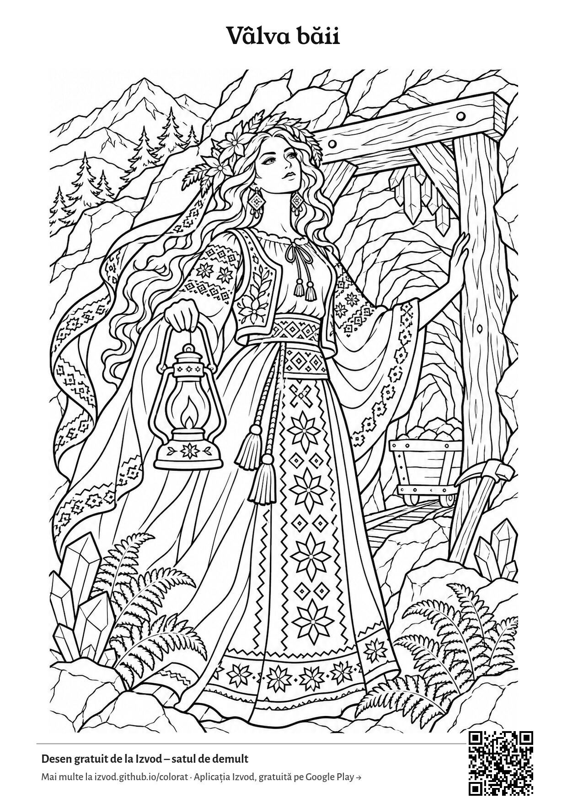

De colorat · Ființe de poveste
Vâlva băii
În poveștile minerilor din Apuseni, Vâlva băii este duhul tainic al minei.
Foaia e A4. Dacă imprimanta taie marginile, alege „Potrivire în pagină”.
Povestea din spatele desenului
În aplicația Izvod găsești obiceiurile, credințele și meșteșugurile satului românesc, scrise după cărțile vechi, cu sursa la vedere. E gratuită.